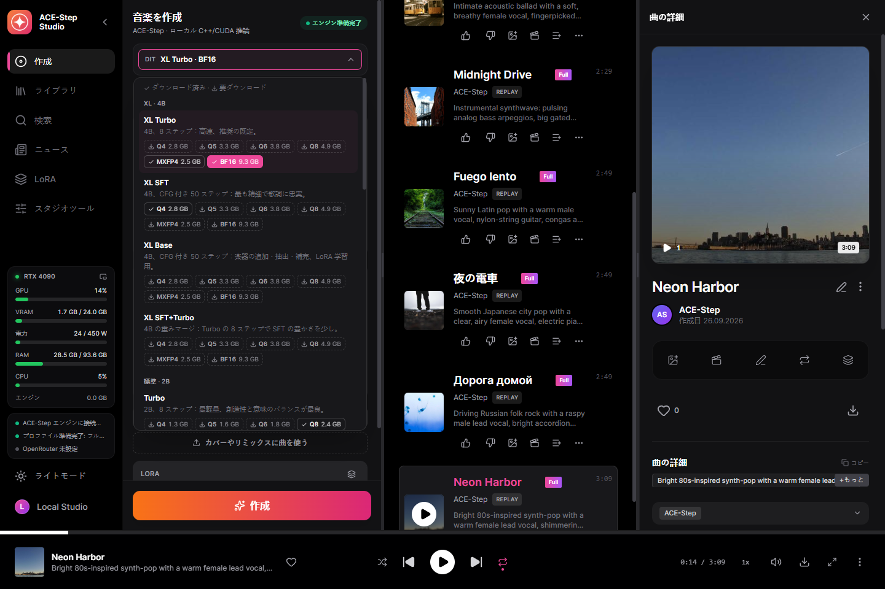
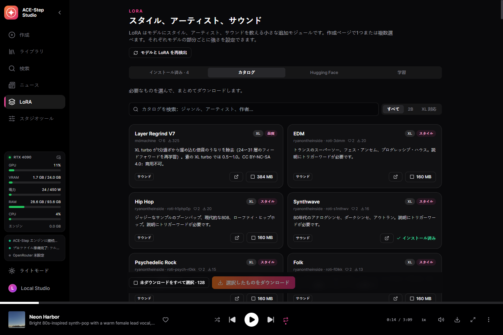
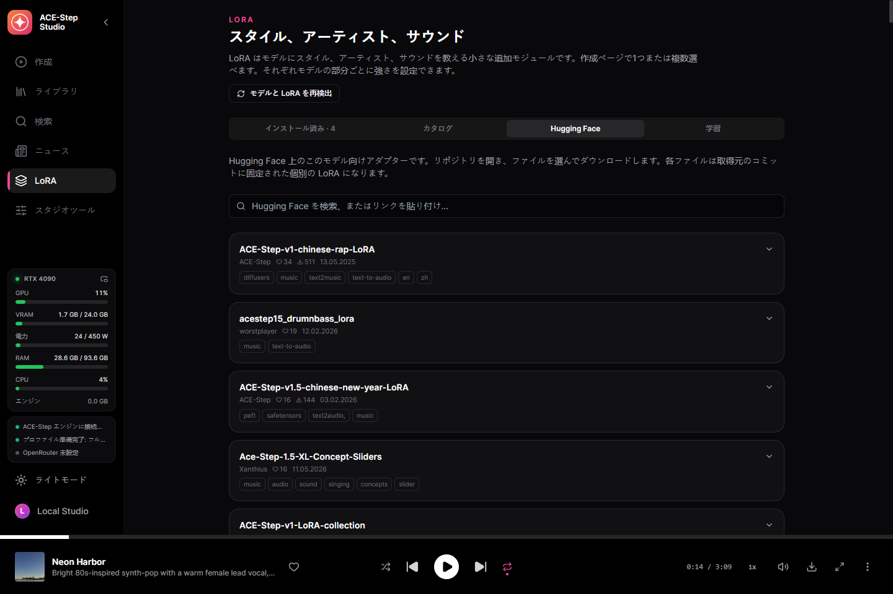
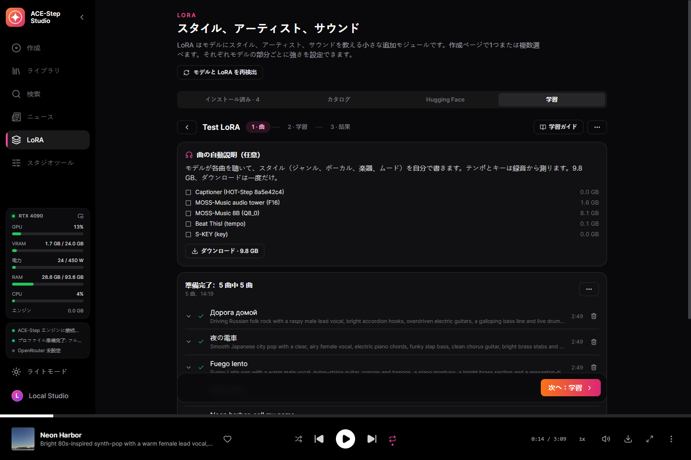
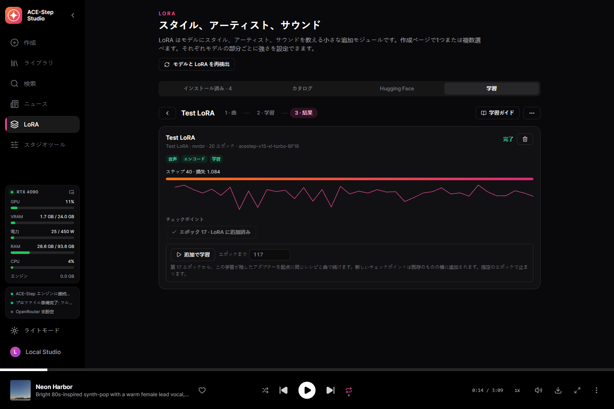
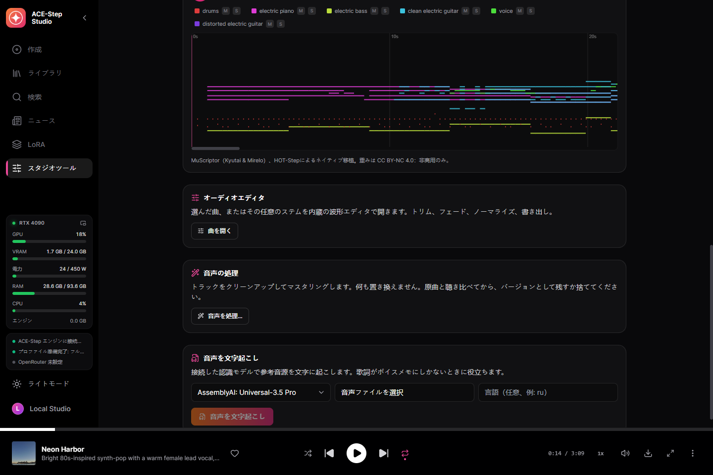
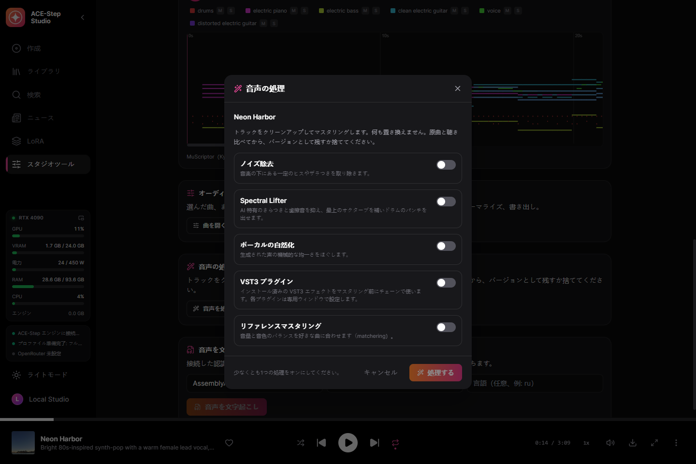
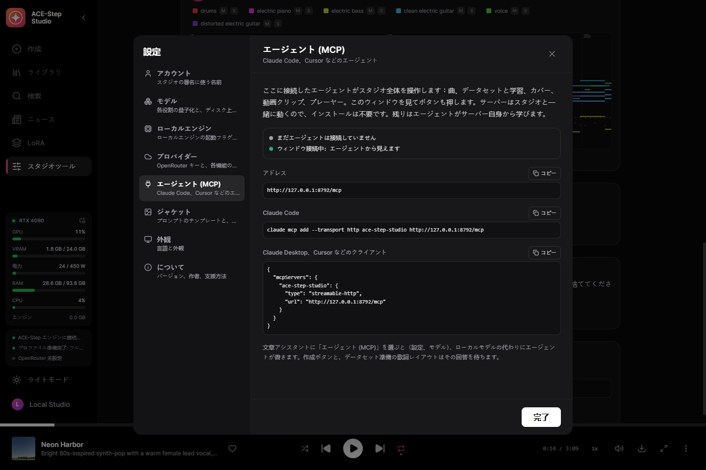
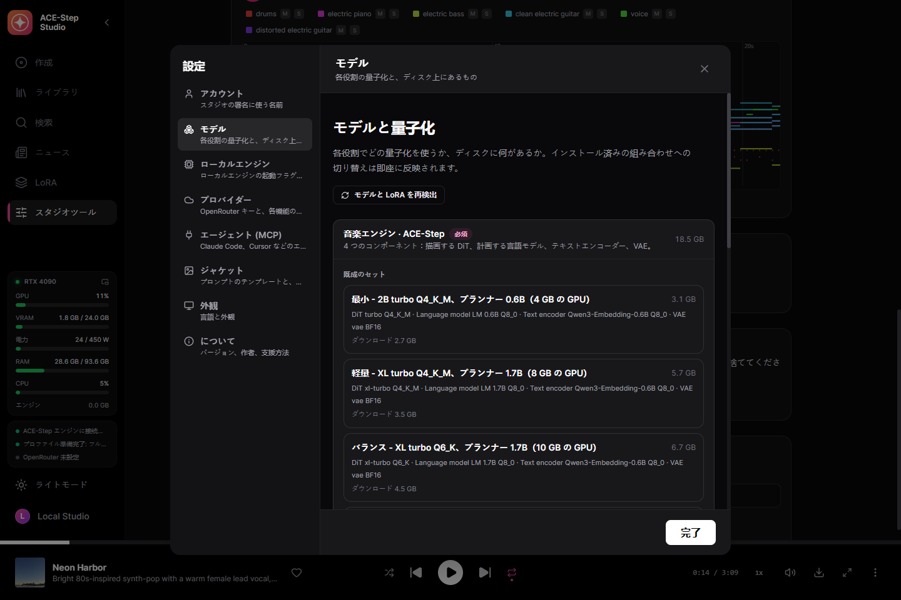

自分の GPU で、ボーカル入りのフルソング
フルソングを書いて歌うオープン音楽モデル ACE-Step 1.5 のためのデスクトップスタジオ。音を説明して歌詞を書けば——あるいは 1 行だけでも——言語モデルが曲を組み立て、あなたの GPU で歌います。ネイティブ C++ エンジン acestep.cpp による exe ひとつ——Python もランチャーも不要です。
Windows 10/11 x64 と、VRAM 4 GB 以上の NVIDIA GPU（GTX 900 以降）。モデルは決めたときにスタジオ内からダウンロードします。
できること
自分でクラウドの鍵をつながない限り、以下はすべてあなたの PC で動きます。
フルソング
キャプションと歌詞から最長 10 分。ACE-Step のプランナーが空欄——テンポ、キー、長さ、歌詞まで——を埋め、DiT がレンダリングする前に構成を組み立てます。
1 行から曲を
シンプルフォーム：アイデアを入れれば完成した曲が出てきます。書くのはアシスタントか ACE-Step のプランナーで、同時には動きません。
すべての ACE-Step モデル
2B と XL の DiT——turbo、SFT、base、マージ、コミュニティのファインチューン——を Q4 から BF16 まで、作成フォームの上で切り替え。プランナーは 0.6B、1.7B、4B。
カバー、リミックス、リペイント
ライブラリの曲を新しいスタイルでレンダリング、リミックス、一部をリペイント、または base モデルでステムの抽出・追加・補完。
正確な再現
各トラックはリクエストとオーディオコードを保存：ビット単位で再レンダリング、またはステップ、新しいシード、複数テイクで。
200 の用意された例
ACE-Step 自身のサンプルリクエストを 1 クリックで読み込み。
作詞アシスタント
ローカルの Gemma、OpenRouter、またはあなたのエージェントが、ACE-Step 公式の作詞ルールでアイデアからキャプションと歌詞を書きます。
LoRA カタログ
いいねとダウンロード数で Hugging Face から選んだ 131 の LoRA、説明と作者付き。Hugging Face 全体も検索でき、各ファイルはダウンロード前に対応するモデルサイズを確認します。
自分の LoRA
1 人のアーティストやスタイルの曲が、HOT-Step のトレーナーと LoKR レシピで GPU 上で LoRA になります。すべての設定を変更でき、チェックポイントは 1 クリックで LoRA ライブラリへ。
ドロップひとつでデータセット
フォルダーをドロップ：歌詞はプレーヤーが使うデータベースから一字一句、Whisper はどこにもない曲だけを聴き、MOSS-Music が全曲を聴いて説明します。再起動しても止まったところから続きます。
単語単位のカラオケ
すべての単語にタイムスタンプが付く拡張 LRC、Parakeet または Whisper で整列。
ステムと MIDI
HT-Demucs で 6 ステム。MuScriptor で任意の曲をマルチ楽器 MIDI に、ピアノロールを原曲と一緒に再生。
オーディオ処理
ノイズ除去、Spectral Lifter、ボーカルの自然化、自分の VST3 プラグイン、リファレンスへのマスタリング。
エージェントで操作（MCP）
Claude Code、Claude Desktop、Cursor をつなぐと、エージェントがスタジオのすべて（163 ツール）を行い、ウィンドウを見て操作します。ACE-Step の作詞ルールが付属するので、エージェントが自分で曲を書きます。
これで作った曲
リリース版のクリーンインストールで、スタジオが保存したままの形でレンダリング。
スクリーンショット
この言語のスタジオそのもの。









モデル
動かせるセットは DiT、プランナー、テキストエンコーダー、VAE で、すべて GGUF です。
| あなたの GPU | セット | ダウンロード |
|---|---|---|
| 24 GB | フルネイティブ — XL turbo BF16、プランナー 4B BF16 | 19.9 GB |
| 13 GB+ | 高品質 — XL turbo Q8_0、プランナー 4B Q8_0（推奨） | 10.9 GB |
| 10 GB+ | バランス — XL turbo Q6_K、プランナー 1.7B | 7.2 GB |
| 8 GB+ | 軽量 — XL turbo Q4_K_M、プランナー 1.7B | 6.1 GB |
| 4 GB+ | 最小 — 2B turbo Q4_K_M、プランナー 0.6B | 3.3 GB |
スタジオは GPU が動かせるセットをあらかじめ選びますが、ダウンロードするかは常にあなたが決めます。各ファイルは固定した Hugging Face のリビジョンと SHA-256 で照合され、中断したダウンロードは再開します。
はじめかた
- インストール — インストーラーを実行するか、ポータブル版を好きな場所に展開。
- セットを選ぶ — 最初の画面が GPU で動くものを選び、足りないものだけをダウンロード。
- 書く — キャプションと歌詞、例、またはシンプルフォームに 1 行。
- 作成 — エンジンが自動で起動し、曲がライブラリに入ります。
何がどこで動くか
既定ではすべてローカル。クラウドの鍵は、選んだ機能のためにあなたが追加します。
| 部分 | 実行場所 | サイズ |
|---|---|---|
| ACE-Step エンジン（acestep.cpp） | あなたの GPU：CUDA、Vulkan、または CPU | 同梱 |
| ACE-Step モデルセット | あなたの GPU | 3.3〜19.9 GB |
| NVIDIA cuBLAS | NVIDIA のみ | 391 MB、1 回 |
| カラオケのタイミング — Parakeet または Whisper | あなたの PC | 任意 |
| ステム分離 — HT-Demucs | あなたの GPU または CPU | 任意 |
| 作詞アシスタント | ローカル Gemma または OpenRouter | 任意 |
| LoRA トレーナー — HOT-Step ace-train | NVIDIA RTX | 0.1 GB + BF16 の DiT、任意 |
| 耳で曲を説明 — MOSS-Music-8B | VRAM 約 12 GB | 9.8 GB、任意 |
| オーディオから MIDI — MuScriptor（HOT-Step ace-midi） | NVIDIA GTX 16 / RTX 20 以降 | 0.5〜5.6 GB、任意 |
| VST3 ホスト — HOT-Step | あなたの PC、独立したプロセス | 同梱 |
しくみ
サービスはデスクトップの実行ファイルに組み込まれ、C++ エンジンを管理します。完成した曲はサービス自身が取り込むので、ウィンドウを再読み込みしたり閉じたりしても結果は失われません。
React UI ─┐
├─ ACE-Step-Studio.exe (Tauri window + Rust/Axum service)
Rust axum ┘ │
└─ acestep.cpp `ace-server` (C++/GGML, GGUF)
プライバシー
あなたの音楽はあなたのもので、あなたのディスクに残ります。
アカウント不要
登録するものは何もありません。
テレメトリなし
スタジオは何を生成したかを送りません。
クラウドは任意
鍵を追加するまで何も PC から出ず、追加してもその機能だけです。
作った人
Nerual Dreming——アーティスト、ArtGeneration.me と Neuro-Cartel コミュニティの創設者。ほかの音楽モデル向けの同じスタジオ、YuE2 Studio と MiniMax Music3 Studio の作者でもあります。